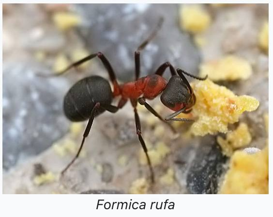

Formica Rufa
Опси:
Це вид мурах який живе у лісах. Має доволі красиве забарвлення. Їсть майже усе, окрім насіння.
Є робочі живуть які живуть 2-3 роки, але нема солдат
Поради:
1.Годувати 1-2 рази на день
2.Зволожувати формікарій раз на 2 дні
3.Зателефонувати нам для безкоштовної консультація що до мурахам.
нема в наявності
Ціна: 100 грн.
Склад:
1 колба
1 Королева мурах
декілька робітників, та личинок
Інструкція:
1.Підготуйте формікаріум
2.Дістаньте пробірку з мурахами
3.Відкрийте пробірку, та покладіть її у формікаріум
4.Зачекайте декілька днів
5.Залиште гарний відгук
|  |
|---|